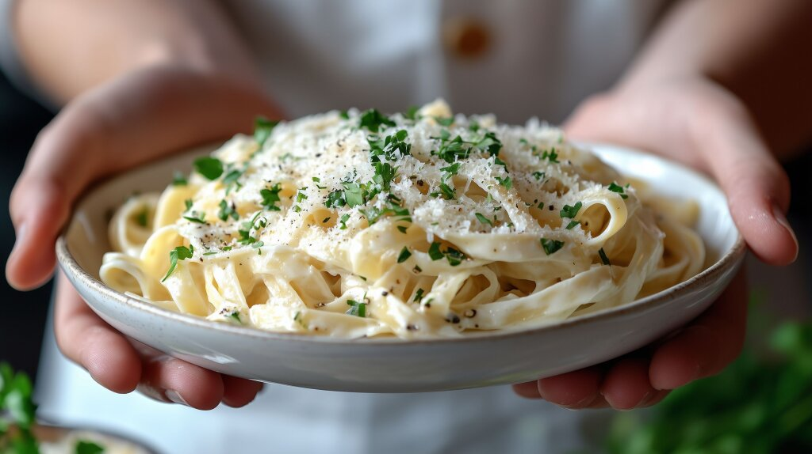

Fettuccine Alfredo

Description
Fettuccine Alfredo is a classic Italian-American pasta dish known for its rich, creamy sauce and simple
elegance.
Traditionally made with just butter, heavy cream, and freshly grated Parmesan cheese, the sauce coats wide
ribbons of fettuccine in a silky, luxurious layer. As the cheese melts into the warm cream and butter mixture,
it creates a smooth, savory sauce with a delicate balance of richness and subtle nuttiness.
Often served as a comforting main course, Fettuccine Alfredo can be enjoyed on its own or paired with grilled
chicken, shrimp, or vegetables for added variety. Its creamy texture and mild flavor make it a crowd-pleaser,
perfect for both weeknight dinners and special occasions.
Ingredients
- Fettuccine Pasta (12 oz)
- Unsalted Butter (1/2 cup)
- Freshly Grated Parmesean Cheese (1 cup)
- Salt (to taste)
- Freshly Ground Black Pepper (to taste)
Steps
- Bring a large pot of salted water to a boil. Cook fettuccine according to package instructions until al
dente. Reserve 1/2 cup of pasta water, then drain the pasta.
- In a large skillet over medium heat, melt the butter. Add the heavy cream and stir until the mixture is well
combined and starts to simmer.
- Reduce heat to low. Gradually whisk in the Parmesan cheese until the sauce is smooth and creamy. Add a pinch
of salt and freshly ground black pepper to taste.
- Add the cooked fettuccine to the skillet and toss to coat the pasta in the sauce. If the sauce is too thick,
add a bit of reserved pasta water to loosen it.
- Serve immediately, garnished with additional Parmesan cheese and chopped parsley if desired.